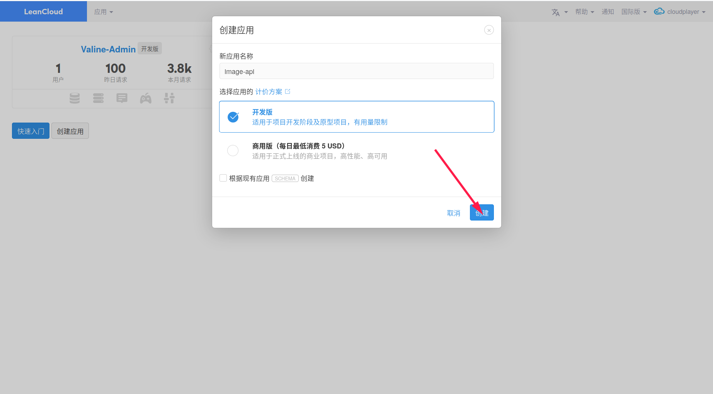
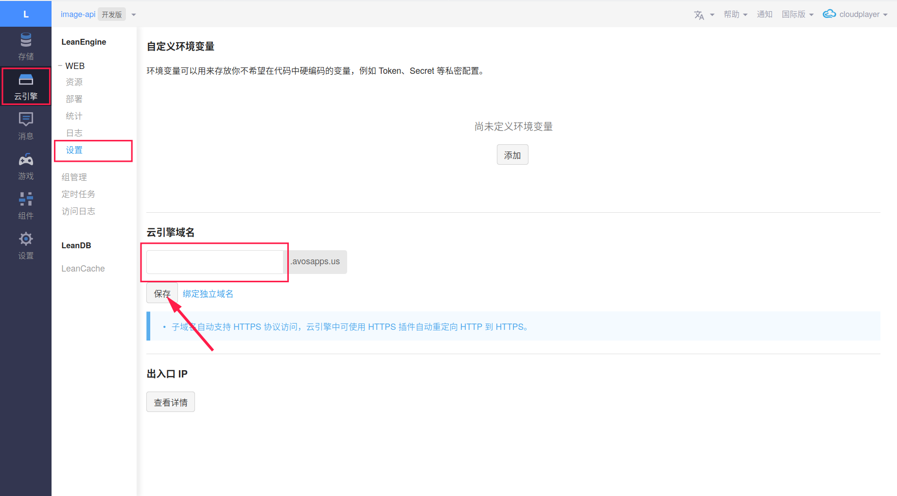
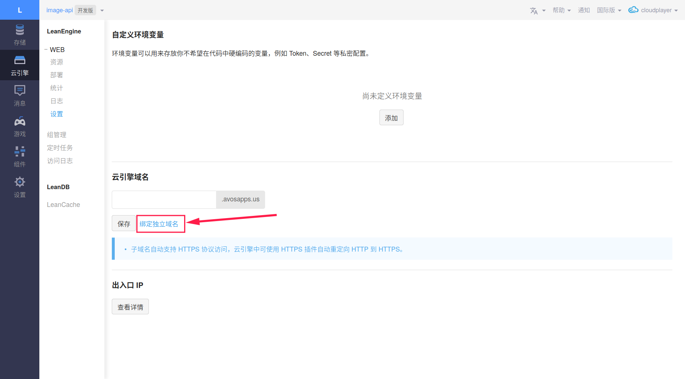
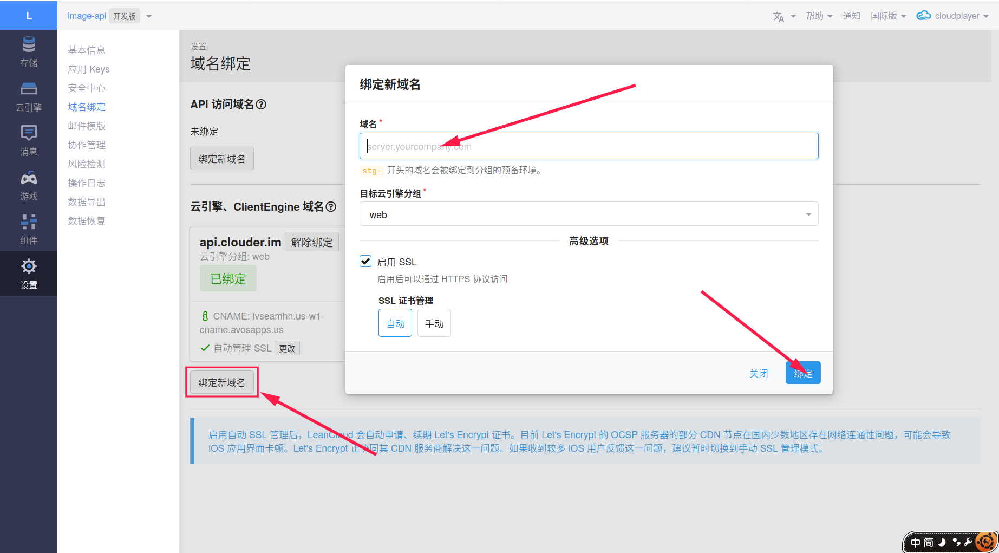

零成本制作随机图片 API
最近有小伙伴问我 api.yunist.cn 这个 API 是怎么做的, 其实非常简单, 用 LeanCloud 的免费实例做的, 废话不多说, 开干!
准备
创建账号及应用
先去 LeanCloud 注册个账号 (建议使用国际版, 这样绑定域名的时候不需要备案, 域名已经备案了的请无视) . 然后去控制台创建一个应用, 选择开发版, 名字就叫 image-api 吧.

下载命令行工具
详情请看安装命令行工具.
登录并初始化项目
命令行输入
1 | lean login |
登录, 然后按照提示选择区域并输入 LeanCloud 用户名和密码完成登录.
然后随意创建一个新文件夹, 进入里面执行
1 | lean init |
然后会输出大概类似下面的信息
1 | [?] Please select an app: |
输入 2 , 回车, 然后又会出现
1 | [?] Please select a language |
输入 4 回车, 然后…
1 | [?] Please select an app template: |
输入 1 回车, 项目就在本地初始化了.
实现随机 API
代码
进入 public/index.php , 然后就可以在这里写实现随机 API 的代码了. 至于如何写随机 API … 其实很简单, 百度一下就有了.
可以写成如下形式
1 |
|
其中 ${%endraw%}url 变量需要你自己填写逻辑. 如果还是不会, 还是百度吧…. (Google 也可以哟)
上传并部署
写完代码之后就是上传和部署了, 非常简单, 只需要
1 | lean deploy --prod 1 |
就好了.
绑定域名
绑定 LeanCloud 域名
如果你没有独立域名的话, 就只能绑定 LeanCloud 的二级域名. 进入应用 -> 云引擎 -> 设置 -> 云引擎域名设置域名, 填写你想要的域名, 然后保存就可以了.

绑定独立域名
绑定独立域名需要你拥有自己的域名. 点击 “绑定独立域名” ,

然后在 “云引擎、ClientEngine 域名” 下点击 “绑定新域名”,

然后写上你想要绑定的域名, 点击确定. 根据它的提示去你域名 DNS 解析所在服务商进行 CNAME 解析. 绑定成功后, 会提示 “已绑定” .
开始使用
只要访问你绑定的域名就可以啦! 现在你就拥有了一个属于自己的 API , 是不是很简单呢. 不过 LeanCloud 免费实例是有休眠政策的.
如果最近 24 小时内累计运行超过 18 小时，则强制休眠。此时新的请求会收到 503 的错误响应码
所以… 如果想要无限制使用, 可以升级实例.